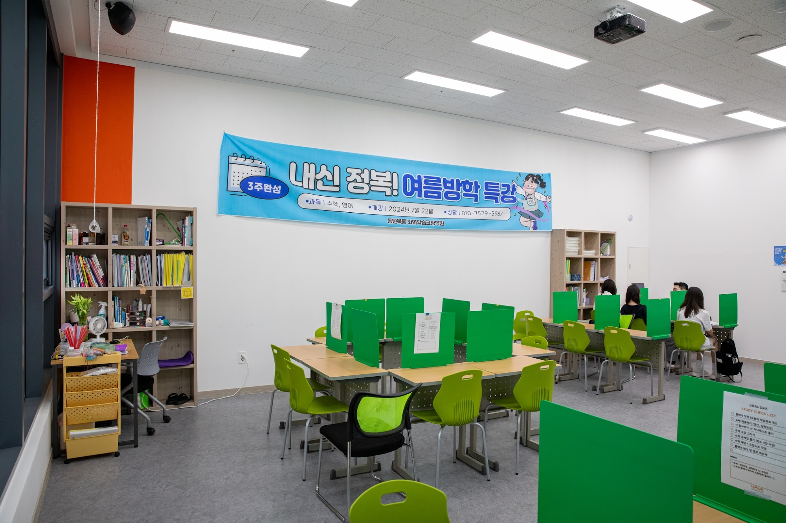
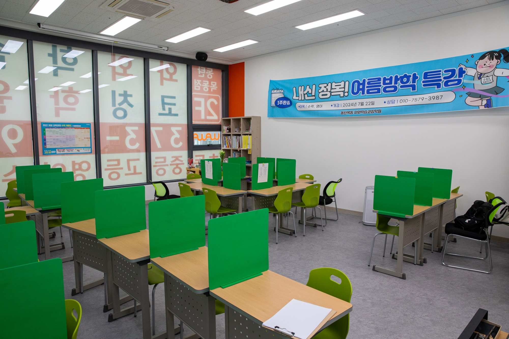
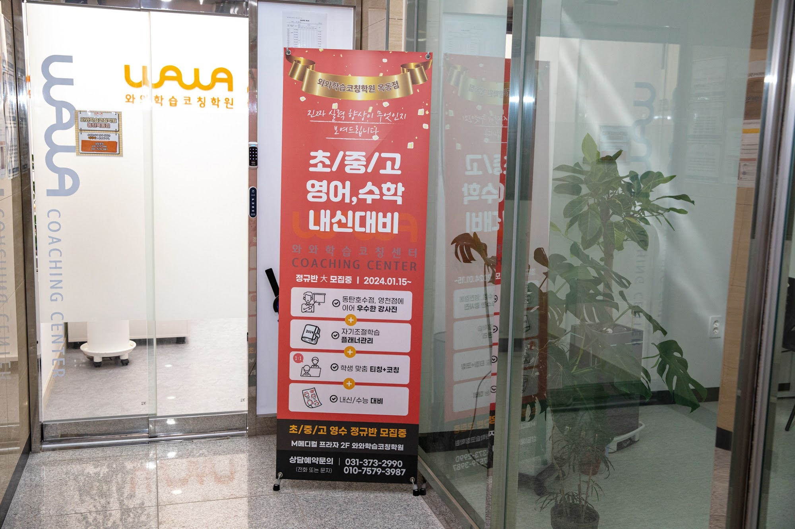

안녕하세요, 경기 화성시 동탄 목동 와와학습코칭 동탄목동점입니다. 여름방학이 어느새 끝을 향해 가고 있습니다. 오늘은 개학을 앞둔 지금, 2학기를 어떻게 준비해야 하는지 초·중·고 학부모님께 전해드립니다.
개학 전 이 2주가 2학기를 좌우합니다
동탄목동중·세정중·창의고·정현고 학생들을 지도해 보면, 방학의 마지막 2주를 어떻게 보내느냐에 따라 2학기 출발이 확연히 달라집니다. 방학 동안 흐트러진 생활 리듬을 개학에 맞춰 되돌리고, 1학기에 약했던 단원을 정리한 뒤 2학기 앞부분을 미리 훑어두는 것이 첫 시험을 지키는 열쇠입니다. 개학하자마자 진도가 나가기 시작하면 따라잡기가 훨씬 어렵기 때문입니다.
동탄은 신도시 학군 특성상 학생 수가 많고 경쟁이 치열합니다. 정확한 2학기 시험 범위와 일정은 학교마다 다르므로, 개학 후 학교 공지와 상담을 통해 확인하는 것이 가장 정확합니다. 동탄목동점은 그 일정에 맞춰 학생별 계획을 함께 세웁니다.

동탄목동점의 개학·2학기 대비 코칭
막연히 예습만 하는 것으로는 부족합니다. 동탄목동점은 이렇게 지도합니다.
- 수학 — 1학기 취약 단원을 먼저 메우고 2학기 핵심 개념을 선행, 틀린 유형을 분류해 약점을 좁히기 (동탄 수학학원·수학 과외가 필요했던 학생에게)
- 영어 — 2학기 교과서 어휘·어법과 지문을 미리 익히고 서술형에 대비하기 (동탄 영어학원·영어 과외)
- 국어 — 비문학 독해와 문학 개념을 학교 지문 중심으로 다지기 (국어학원)
- 과학·사회 — 개념을 흐름으로 이해하고 수행평가 유형을 미리 연습하기 (과학학원)
이렇게 방학 마무리를 보내면 개학 후 2학기 첫 시험에서 출발선이 완전히 달라집니다.

방학의 끝이 2학기의 격차를 만듭니다
개학이 시작되면 진도에 쫓겨 앞서 준비할 여유가 없습니다. 남은 방학이야말로 2학기 내신을 미리 잡을 수 있는 결정적 시기입니다. 동탄 목동 일대 학부모님들, 우리 아이의 2학기 성적은 지금 이 방학 마무리에서 시작됩니다.
와와학습코칭 동탄목동점 학년별 공부 방법
동탄 와와학습코칭(와와학습코칭 동탄목동점)은 초등학생·중학생·고등학생 각 학년에 맞는 공부 방법으로 지도합니다. 조용한 자습실·공부방에서 스스로 공부하고, 영어학원·수학학원·과학학원·국어학원처럼 과목별 코칭까지 한곳에서 받을 수 있습니다.
- 초등학생 (초3·초4·초5·초6) — 스스로 공부하는 습관과 기초 개념 잡기. 동탄 초등 수학학원·영어학원·공부방을 찾으신다면.
- 중학생 (중1·중2·중3) — 전과목 내신 대비와 고등 준비, 오답 정리와 서술형 훈련. 동탄 중등 수학학원·영어학원·과학학원·국어학원.
- 고등학생 (고1·고2) — 내신과 수능을 함께 잡는 자기주도학습 플래닝과 취약 과목 집중. 동탄 고등 영수학원·종합학원·자기주도학습.

와와학습코칭 동탄목동점 위치와 주변
- 🚇 교통 — 동탄 목동 동탄신리천로 408 M메디칼 212호
- 🏢 인근 동네 — 동탄2신도시 목동 일대 아파트 단지에서 도보로 오실 수 있습니다.
와와학습코칭 동탄목동점 인근 학교
동탄 와와학습코칭(와와학습코칭 동탄목동점)은 인근 학교 학생들의 내신·수능을 함께 준비합니다. 아래 학교에 다니는 학생이라면 영어학원·수학학원·과학학원·국어학원을 따로 찾을 필요 없이, 가까운 우리 센터에서 과목별 1:1 자기주도학습 코칭·과외를 받을 수 있습니다.
- 인근 초등학교 — 동탄목동초등학교·한율초등학교·현민초등학교·화성신동초등학교 영어학원·수학학원·과학학원·국어학원·공부방
- 인근 중학교 — 동탄목동중학교·세정중학교 영어 과외·수학 과외·과학학원·국어학원
- 인근 고등학교 — 창의고등학교·정현고등학교 영어학원·수학학원·내신·과외
📍 와와학습코칭 동탄목동점 센터 정보 자세히 보기 — 주소·전화·인근 학교 안내를 확인하실 수 있습니다.